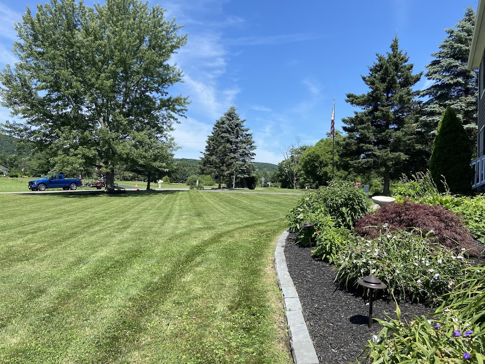
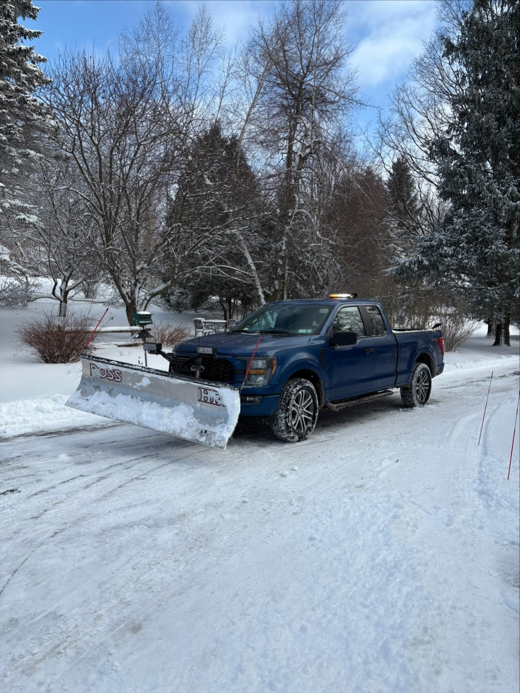
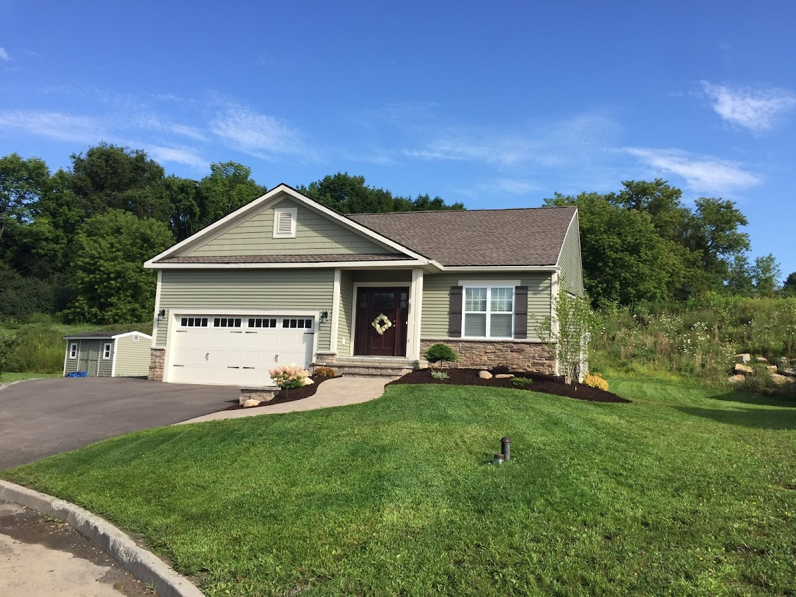
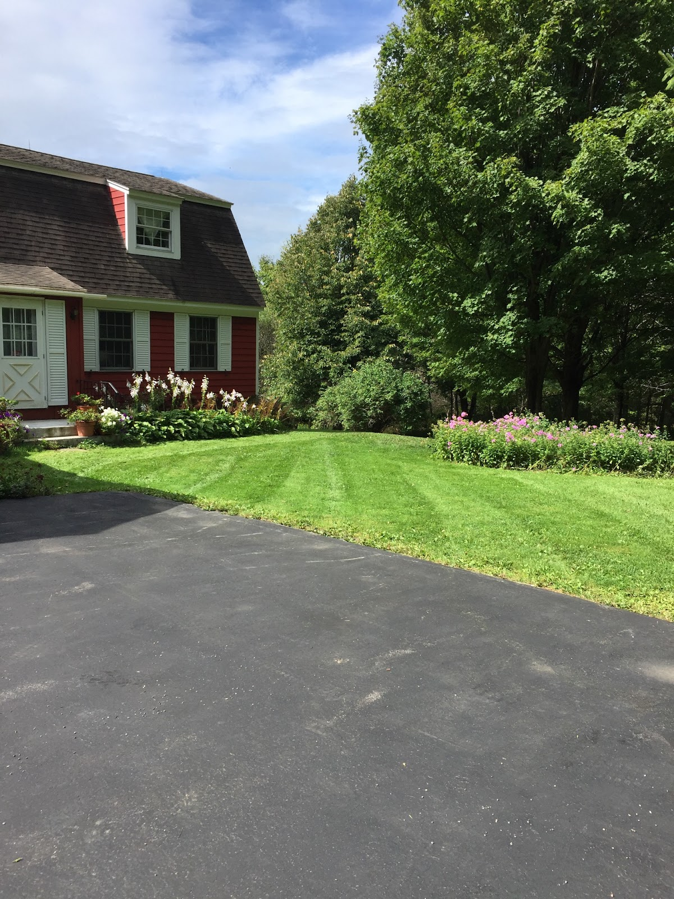
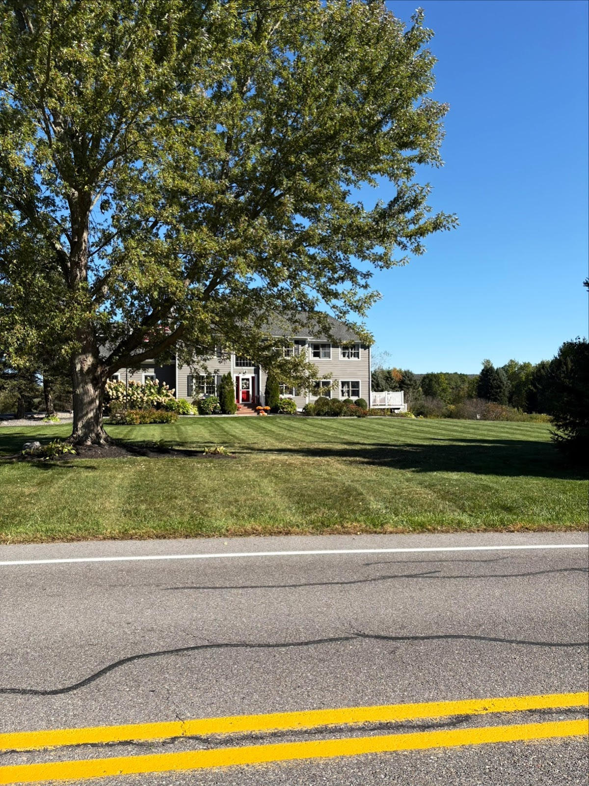
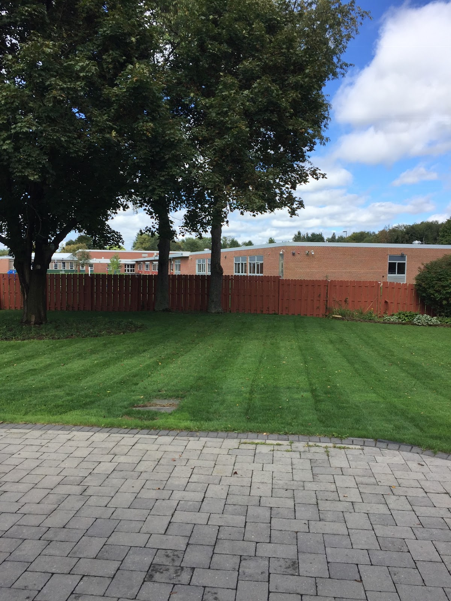
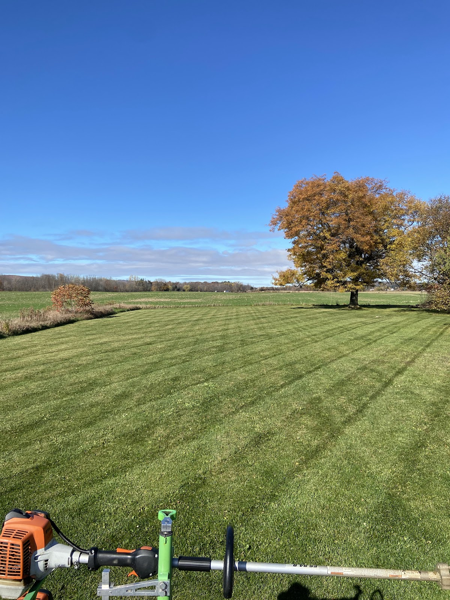

SEASON 01
Clean, striped cuts on a schedule, plus mulch beds, trimming, and tree & brush cleanup to keep the whole property sharp.

SEASON 02
Driveways and lots plowed when the snow comes — careful around lawn edges, repairing any spots if needed. The plowing search finally finds you.
Even, striped cuts on a reliable schedule all season.
Driveways and lots cleared through the winter.
Fresh mulch and clean edging around beds and foundations.
Downed limbs and brush cleared and hauled off the property.
PHOTOS FROM OUR OWN JOBS





★★★★★
“Dave has kept my driveway plowed the past few years. He has been punctual... He is very careful of the lawn areas and has repaired the few spots that needed attention.”
★★★★★
“Whether it's plowing or mowing, he takes pride in his work and takes care of his customers' needs.”
| MON – FRI | 8:00 AM – 5:00 PM |
| SAT | CLOSED |
| SUN | CLOSED |
Snow events handled outside posted hours — call or text anytime it's coming down.
1068 NY-80, Tully, NY 13159
Lawn in the summer, snow in the winter — get on the schedule with one call or text.